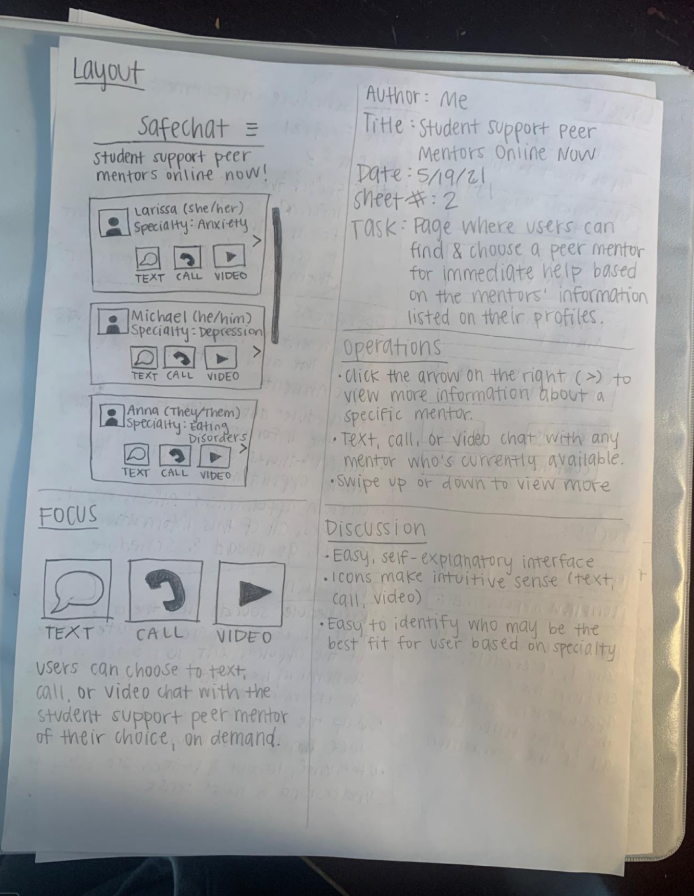

Duration
March - June, 2021
Key Contributions
User Research
User Personas
User Journey Map
Storyboard
Prototyping
Usability Testing
Interface Redesign
User Personas
User Journey Map
Storyboard
Prototyping
Usability Testing
Interface Redesign
Tools
Figma
Miro
Storyboard That
Canva
Miro
Storyboard That
Canva
Team
Ashlyn Aske
Christian Ramos
Katie Hancock
Shivam Hingorani
Christian Ramos
Katie Hancock
Shivam Hingorani
SafeChat
Where support meets convenience, one chat at a time.
SafeChat is a mobile app tailored to cater to the specific mental health needs of University of Washington students. It's a platform that's designed to bridge the gap between readily accessible, on-demand mental health support and the unique challenges faced by college students.
USER RESEARCH
Our research delved into the hurdles university students encounter when seeking mental health resources. Through in-depth user interviews, we discovered prevalent issues:
- Lack of awareness about available resources
- Accessibility barriers including cost and availability
- A preference for indirect communication channels
- Skepticism toward AI-based mental health support
USER PERSONAS
Meet
Erica, a 31-year-old graduate student in Applied Math, and
Mike, a 20-year-old sophomore studying Human Centered Design & Engineering.
Erica seeks immediate, affordable support, while
Mike prefers human-centric approaches at a lower cost. SafeChat aims to cater to these varying needs by offering an adaptable platform that integrates intuitive features for both users.

USER JOURNEY MAP
To capture Mike's experience, we created a user journey map that highlighted his emotions, pain points, and moments of satisfaction while engaging with SafeChat.
STORYBOARDING THE EXPERIENCE
Visual storyboards outlined crucial user moments and emotions throughout SafeChat's mental health support journey.


INTERFACE SKETCHES
I used pencil-and-paper sketches to brainstorm and conceptualize ideas, capturing initial thoughts and design elements for the app's interface.
Screen 1: Homepage

Screen 2: Instant Support
Screen 3: Scheduled Support
Screen 4: Journaling
Screen 5: Additional Resources
LOW-FIDELITY WIREFRAMES
We crafted low-fidelity wireframes in Figma to visualize SafeChat's interface structure. Utilizing simple shapes and basic elements, they outlined the layout and placement of key features within the app.

ANNOTATED WIREFRAMES
I annotated each wireframe, providing an in-depth depiction of the app's functionalities and interactions.
HIGH-FIDELITY PROTOTYPE
Our team developed high-fidelity prototypes, undergoing significant iterations to enhance visual appeal and user interactions. Later, I undertook an independent iterative redesign, focusing on refining the UI and improving user experience.
My Team’s Original UI
My Redesigned UI
REFLECTIONS & KEY TAKEAWAYS
The design journey was a learning curve, emphasizing the value of upfront work in the low-fidelity stage, user feedback, and robust usability testing. Challenges emerged from inexperience, particularly in translating insights into personas and AI-based support. However, adapting to user concerns led to a successful pivot in the design process.
Our project underscored the importance of inclusivity and accessibility. While our personas were diverse, we recognized the need for broader user group representation. A more extensive user research phase would have ensured a more inclusive design.
My independent redesign process highlighted the significance of iterative design, incorporating new insights to refine both aesthetics and usability. Collaborative efforts proved rewarding, showcasing the power of teamwork in shaping SafeChat into a refined, user-centric platform.
Through dedication, communication, and a cohesive team culture, we were able to craft a mental health support platform that surpassed individual contributions, evolving SafeChat into a more refined and user-centric platform.


© Designed and Developed by Katie Hancock